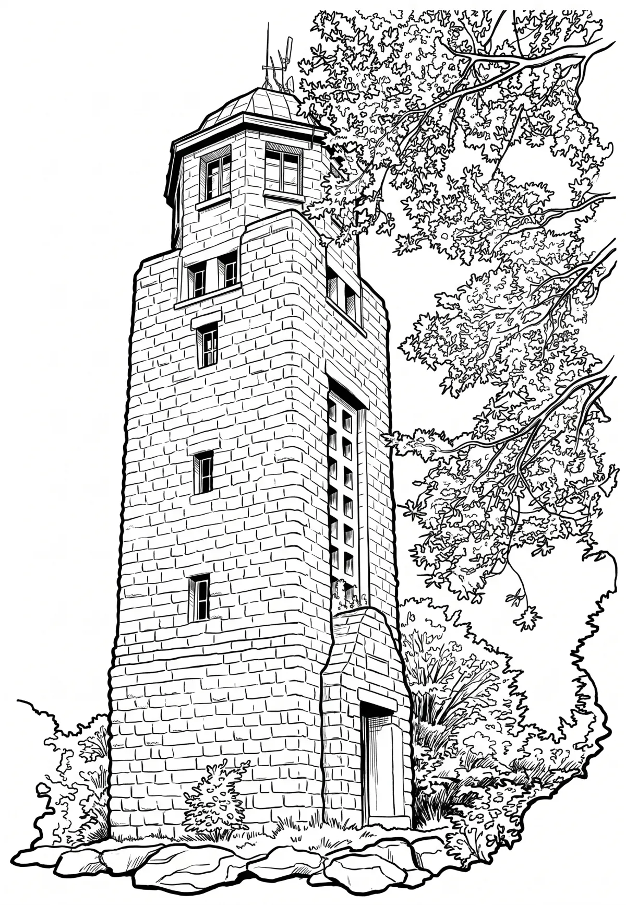

Rozhledna Bramberk
Bramberk je 21 metrů vysoká kamenná rozhledna na 787 m vysokém stejnojmenném postranním vrcholu kopce Krásný v maxovském hřebeni Jizerských hor. První, dřevěnou rozhlednu otevřela 4. srpna 1889 lučanská sekce Horského spolku. Nedaleko této třípatrové, 16 metrů vysoké věže byla roku 1892 přistavěna chata, která zde stojí dodnes.
Více na Wikipedii